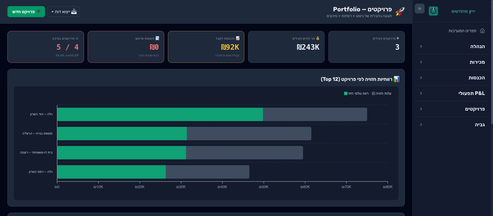
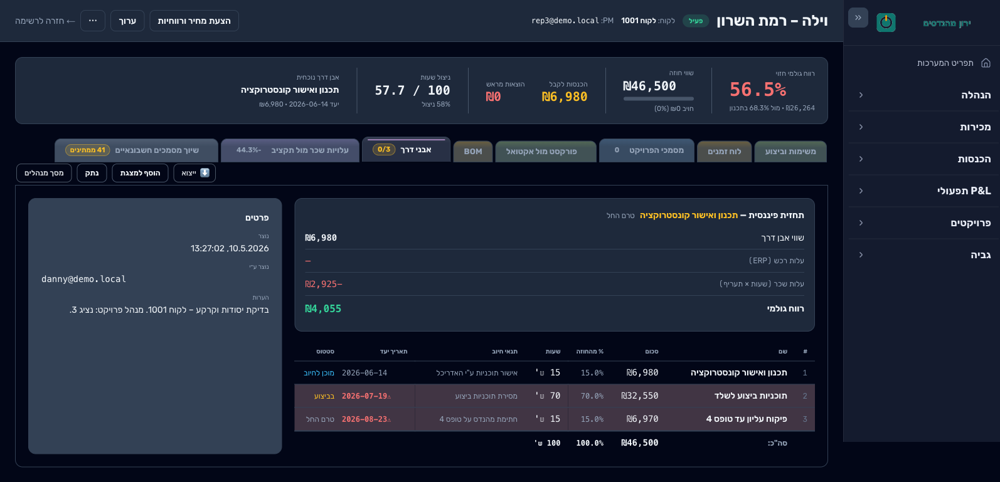
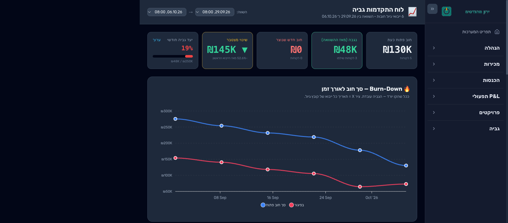
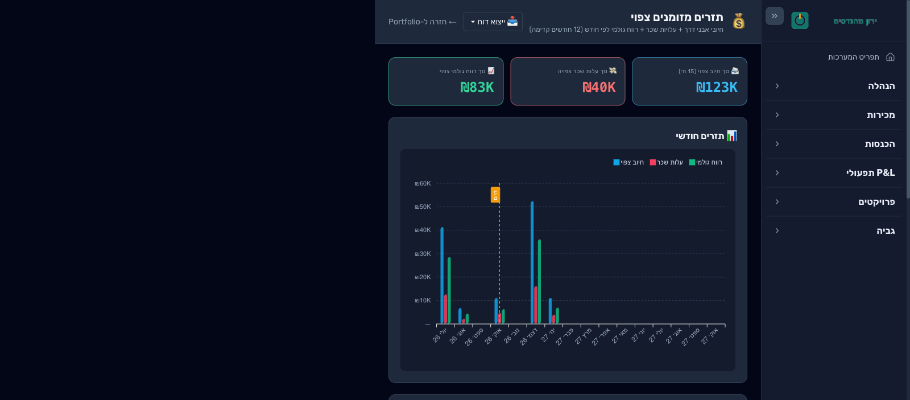

מיפוי מלא של התהליכים הקיימים - עם כל הכלים שבהם משתמשים בפועל - ואחריו הצעה ממוקדת לשלב ראשון שסוגר את הפערים הכי כואבים, בלי לגעת בתהליך ההנדסי וההחלטות המקצועיות.
הוכן ע"י גלעבור משרד תכנון קונסטרוקציה4.10.2026טיוטה לדיון
המצב הקיים
ארבעת התהליכים המרכזיים - כפי שהם רצים היום
לפני שמדברים על פתרונות - כך בדיוק עובדים היום ארבעת התהליכים המרכזיים במשרד, כולל באילו כלים
משתמשים בכל שלב: טלפון, מייל, וואטסאפ, תיקיות רשת, אקסל ודפים רשומים ביד.
1 · קבלת בקשה להצעת מחיר - מהפנייה הראשונית ועד שההצעה החתומה מגיעה ללילי, כולו דרך טלפון, מייל ומסמכי Word בודדים.
2 · תהליך הכספים - מתחיל בחתימת החוזה, לא בקבלת ההצעה. קובץ אקסל מרכזי אחד מסמן אדום (נדרשת גבייה) / ירוק (שולם) / כחול (לא נדרש) לכל הפרויקטים, והמחזור הזה חוזר על עצמו 3 פעמים (15% / 70% / 15%).
3 · תהליך העבודה ומעקב אחרי הלקוח - מחתימת החוזה ועד טופס האיכלוס, על פני חודשים וכ-3-5 ביקורי פיקוח חוזרים, כולו מתואם בטלפון, וואטסאפ ודף רשום ביד.
4 · תהליך התנהלות הכספים - מחזור שחוזר על עצמו לכל לקוח ולכל שלב תשלום (15% / 70% / 15%), בלי מערכת שמזהה לבד מי לא שילם.
מה שעולה מהמיפוי
הבעיות המרכזיות בכל תהליך
תהליך
הבעיות שהמיפוי חושף
1 · קבלת בקשה להצעת מחיר
אין מעקב כתוב על בקשות שנשלחו ולא נענו - הכול חי בתיבת מייל בודדת
פרטי הלקוח והפרויקט קיימים רק בתוך קובץ המסמך עצמו, לא במקום מחפש
אין שום מעקב אחרי הצעות שנשלחו ולא הבשילו לפרויקט - ואין תיעוד של הסיבה
פרטים חשובים (כתובת מדויקת, פרטי התקשרות ועוד) לפעמים חסרים ומתגלים רק בהתכתבות חזרה ונשנית עם הלקוח
2 · קבלת הזמנה, תמחור ומעקב תשלום
כפילות ידנית: כל פרויקט נפתח פעמיים, בשני מחשבים שונים, באותו שם - בלי קישור ממשי בין התיקיות
כל מחשב מגובה לענן בנפרד, אבל אין מערכת אחת: טעות הקלדה בשם התיקייה משאירה את שתי הגרסאות לא מסונכרנות, ואף אחד לא בודק את זה
"אין בקרה נוספת" מעבר למייל תזכורת אחד - לקוח ששותק נשאר תלוי באוויר
3 · תהליך העבודה ומעקב אחרי הלקוח
רישום פרויקטים חדשים נעשה על דף פיזי - לא מתגבה ותלוי שמישהו יזכור לעדכן
תיאום ביקורי פיקוח מתבצע כולו בטלפון ובוואטסאפ, בלי יומן משותף אמיתי
חתימת טפסי הגמר תלויה בבדיקה ידנית מול לילי בכל פעם מחדש
4 · תהליך התנהלות הכספים
הגבייה חוזרת על עצמה בנפרד לכל שלב תשלום ולכל לקוח, בלי מערכת שעושה את זה אוטומטית
סימון ירוק באקסל הוא התיעוד היחיד שקיים על מי שילם
אין טריגר שיטתי שמזהה לקוח שמתעלם - זה קורה רק "אם מרימים טלפון"
בעיה מול פתרון
מה קורה היום, ומה ישתנה
תמצית של כל מה שמופה למעלה - מצד אחד הדרך שבה הדברים מתנהלים היום, ומצד שני מה המערכת תשנה בכל נקודה.
תחום
המצב היום
הפתרון המוצע
קליטת פרויקט
כל פרויקט נפתח ידנית פעמיים בשני מחשבים באותו שם, בלי קישור; פרטים חשובים חסרים ומתגלים רק בהתכתבות חוזרת.
טופס אישור הזמנה אונליין עם שדות חובה, שפותח פרויקט אחד מסודר במקום אחד - בלי כפילויות ובלי פרטים חסרים.
הצעות מחיר
בקשות חיות בתיבת מייל בודדת, אין מעקב אחרי הצעות שנשלחו ולא הבשילו, ואין תיעוד למה לקוח לא התקדם.
מודול שעוקב אחרי כל הצעה שנשלחה, מתריע על הצעות תקועות, ומתעד מי זכינו, מי לא ולמה - בסיס לקבלת החלטות.
מעקב ומידע
רישום פרויקטים על דף פיזי שלא מתגבה, ומידע מפוזר בין מחשבים, תיקיות רשת וקבצי אקסל נפרדים.
מערכת אחת מרכזית שרואים בה את כל הפרויקטים, אבני הדרך, התשלומים והסטטוס - נגיש, מגובה ומסונכרן.
גבייה
גבייה ידנית שחוזרת על עצמה לכל שלב ולכל לקוח; סימון ירוק באקסל הוא התיעוד היחיד; לקוח שמתעלם מתגלה רק אם מרימים טלפון.
מודול שמזהה לבד מי לא שילם בכל שלב, מכין טיוטת תזכורת, ומצליב תשלומים מהבנק מול תיק הלקוח - ושואל את לילי כשיש ספק.
תיאום ביקורי פיקוח
תיאום כולו בטלפון ובוואטסאפ, בלי יומן משותף אמיתי, וחתימת טפסי הגמר תלויה בבדיקה ידנית מול לילי בכל פעם.
מודול שמציע שיבוץ יומי מתוך יומן משותף ומעדכן את קבוצת הוואטסאפ - ירון רואה ומאשר את סידור היום לפני שהוא נשלח.
בכל מודול הגבול זהה: המערכת מוסיפה מידע ומכינה טיוטות, אבל כל פעולה סופית - שליחה, חתימה, אישור תשלום, שיבוץ - נעשית רק אחרי שבן אדם ראה ואישר.
הפתרון המוצע
מערכת אחת, ארבעה מודולים, בגבול מוגדר
הפתרון לא מחליף אף אחד מהעובדים ולא נוגע בחתימה ההנדסית. ארבעה מודולי AI נכנסים בדיוק בנקודות הכשל
שמופו למעלה - אחד בקצה הקליטה, אחד עוקב אחרי הצעות מחיר שנשלחו ולא הבשילו, אחד בקצה הגבייה, ואחד
בתיאום ביקורי הפיקוח - וכל אחד מהם מוסיף מידע ומכין טיוטות, אבל אף פעולה סופית (שליחה, חתימה, אישור
תשלום, שיבוץ) לא קורית בלי שבן אדם ראה אותה.
🤖 מודול קליטת פרויקטים
מטרה
להבטיח שפרטי לקוח ופרויקט מתקבלים מלאים כבר מההתחלה (שדות חובה בטופס), במקום לרדוף אחרי מידע חסר בהתכתבויות חזרות ונשנות
קלט
טופס אונליין שהלקוח ממלא לאחר קבלת ההצעה (שדות חובה) + מייל נכנס מאדריכל עם תוכניות
פלט
רשומה חדשה ומלאה במסד הנתונים + טיוטת מייל אישור לאדריכל, מוכנה לבדיקה
גבול אחריות: המודול לא שולח שום מייל בעצמו ולא מחליט על תוכן הנדסי - רק קולט, מתעד ומכין טיוטה. אילו שדות חובה בטופס - זו החלטה של הצוות, לא של המודול.
🤖 מודול מעקב סטטוס הצעות מחיר
מטרה
לדעת על כל הצעת מחיר שנשלחה אם התקבלה או לא, ולמה - כדי לצבור מידע שיעזור לשפר את אחוז הסגירה בהמשך
קלט
הצעות מחיר שנשלחו + תשובת הלקוח (או שקט מצידו)
פלט
סטטוס "התקבלה / לא התקבלה" לכל הצעה, סיבת דחייה מתועדת, ודוח מגמות תקופתי לצוות
גבול אחריות: המודול לא מחליט מה לשנות בתמחור או בעבודה - הוא רק אוסף ומתעד את המידע. ההחלטה האסטרטגית נשארת של הצוות.
🤖 מודול מעקב גבייה
מטרה
לבדוק יומית מי שילם ומי לא, לכל לקוח ולכל שלב תשלום, ולהתאים כל הפקדה לתיק הנכון - בלי שמישהו "יזכור" לבדוק
קלט
סטטוס תשלומים מרווחית + חשבון הבנק, ועדכוני וואטסאפ מהבנק על כל תנועה בחשבון
גבול אחריות: המודול לא שולח חשבונית סופית ולא מחליט לוותר על חוב. כשהוא לא בטוח לאיזה תיק שייכת הפקדה, הוא פונה ללילי במקום לנחש - ולילי מכוונת אותו ומאשרת את השליחה בעצמה.
🤖 מודול תיאום ביקורי פיקוח
מטרה
להחליף את היומן הידני והתיאום הטלפוני בשיבוץ שרואים אותו כולם, בלי לשנות איך מזמינים ביקור
קלט
בקשת ביקור (טלפון/מייל) + זמינות הצוות ביומן המשותף
פלט
הצעת שיבוץ יומית + עדכון לקבוצת הוואטסאפ המשרדית
גבול אחריות: המודול מציע שיבוץ, לא קובע אותו - ירון רואה ומאשר את סידור היום לפני שהוא נשלח לצוות.
תצוגה מקדימה
כך תיראה המערכת שלכם
הדמיה של כמה מסכים מרכזיים, כדי להמחיש את התוצר הסופי. הכל נבנה ומותאם במיוחד למשרד -
מבנה התשלומים, שלבי הפרויקט והמונחים הם של עבודת קונסטרוקציה, לא תבנית גנרית.
המספרים, הלקוחות והשמות שבתמונות הם לדוגמה בלבד.

מעקב פרויקטים ורווחיות - כל הפרויקטים הפעילים במקום אחד, עם רווח גולמי חזוי לכל פרויקט והתראות על חריגה מהתקציב.

אבני דרך ותשלומים - מבנה 15% / 70% / 15% לכל פרויקט, עם תנאי החיוב (אישור אדריכל, מסירת תוכניות, טופס 4) והסכום בכל שלב.

מעקב גבייה - תמונת חוב פתוח מול נגבה, יעד חודשי, וגרף ירידת החוב לאורך זמן.

תזרים מזומנים צפוי - מתי צפוי להיכנס כסף מכל פרויקט, לפי אבני הדרך ותנאי התשלום, קדימה ל-12 חודשים.
עקרונות
איך זה נבנה
1
אדם מחליט, לא ה-AI
כל חתימה הנדסית וכל אישור תשלום נשארים החלטה אנושית. האוטומציה מכינה מידע, לא מחליטה.
2
מתחילים קטן
שלב 1 בלבד, על דאטה אמיתי. שלב 2 רק אם זה מוכיח את עצמו בפועל.
3
מקום אחד למידע
מחליף את הכפילות בין תיקיית projects לתיקיית כספים - בלי לשנות איך העובדים עובדים היום.
שלבי העבודה
מה כלול, ומה אפשרי בהמשך
01
קליטה, גבייה, מעקב הצעות ותיאום ביקורים
משך הקמה: כ-8-10 שבועות
כלול בהצעה זו
מסד נתונים מרכזי אחד לכל פרויקט פותר את הכפילות ואת הסיכון לטעויות הקלדה בשם התיקייה מתהליך 2
מודול קליטה שקורא מיילים נכנסים מאדריכלים, שולף פרטים ופותח רשומה אוטומטית פותר את הרישום הידני על דף בתהליך 3
טופס אונליין לאישור חוזה עם שדות חובה, שהלקוח ממלא אחרי קבלת ההצעה מונע את ההתכתבות החזורה להשלמת מידע חסר בתהליך 1
מודול מעקב גבייה עם תזכורות אוטומטיות לפי שלב תשלום, כולל התאמת הודעות וואטסאפ מהבנק לתיק הלקוח (עם הכוונה של לילי כשלא ברור) פותר את היעדר הבקרה בתהליכים 2 ו-4
מודול מעקב סטטוס הצעות מחיר - מזהה הצעות שלא נחתמו ואוסף את סיבת הדחייה סוגר פער שלא עלה במיפוי המקורי - היום אין שום מעקב אחרי הצעות שאבדו
יומן משותף לתיאום ביקורי פיקוח, עם שיבוץ אוטומטי לפי עומס ועדכון יומי לקבוצת הוואטסאפ המשרדית פותר את תיאום הביקורים בתהליך 3 - תוספת פשוטה שנכנסת כבר בשלב הזה
מטרת המודולים: להחליף זיכרון אנושי בתיעוד שרץ לבד, בלי לקבל אף החלטה הנדסית. המחיר עודכן - זו מערכת פנימית מותאמת, לא חיבור כלים מוכנים22,000–25,000 ₪
02
אינטגרציית וואטסאפ עסקי
עתידי
אופציונלי - בהמשך
תזכורות גבייה ועדכוני תיאום דרך וואטסאפ, לא רק מייל
דורש אישור WhatsApp Business API
יתומחר בנפרד, רק אחרי שלב 13,000 ₪ + שוטף
תמחור ותשלום
שלב 1 - פירוט
מתי
מה מופעל
אחוז
עם אישור ההצעה
תחילת עבודה
50%
עם מסירת שלב 1
המערכת פעילה ונבדקה על דאטה אמיתי
50%
זו הצעת מחיר בין חברים, לא מחיר שוק מלא - סוכנות חיצונית הייתה מצטטת טווח גבוה יותר על היקף זהה.
אחזקה
עלויות שוטפות אחרי ההקמה
סעיף
עלות חודשית
תחזוקה ותיקונים קטנים
400–600 ₪
אחסון שרת ומסד נתונים (Render או דומה)
כ-20–50 $
חיבור וואטסאפ (קריאת הודעות בנק)
כ-30–50 $
קריאות AI (Claude API), לפי שימוש בפועל
כמה דולרים בודדים
מבט נוסף
תהליכי משרד ההנדסה — גרסה מפושטת
אותה הצעה, מוצגת כמיפוי תהליכים נוח לקריאה: יום בעבודה של לילי לפני ואחרי, מפת התהליכים, וטבלת כאב ← מודול ← מדד הצלחה. נוח למי שמחליט, לא רק למי שבונה.
התמונה הגדולה
יום בחיי לילי — לפני ואחרי
לילי מעורבת בשלושה מתוך ארבעת המודולים, ולכן היום שלה הוא הדרך המהירה להבין מה משתנה. הלקוחות והשעות בטבלה הם דוגמה.
שעה
היום
עם המערכת
08:30
פותחת את האקסל המרכזי ומחפשת שורות אדומות. נכנסת לבנק ולרווחית ובודקת לקוח אחר לקוח מי שילם.
פותחת מסך אחד: שלושה לקוחות שלא שילמו, והפקדה אחת שכבר הותאמה לתיק שלה.
09:00
כותבת מייל תזכורת לכל לקוח, אם היא זוכרת למי צריך. לקוח ששותק שבועיים נשכח לפעמים.
קוראת שלוש טיוטות תזכורת שהמערכת הכינה, מתקנת מילה ומאשרת. לקוח ששותק אחרי שתי תזכורות מסומן לשיחת טלפון.
11:00
ירון מתקשר: "כהן שילם? אני צריך לחתום לו על טפסים." לילי עוצרת את מה שהיא עושה ובודקת.
ירון רואה בעצמו בתיק של כהן שהתשלום התקבל, וחותם. לילי לא נקראת.
14:00
פרויקט חדש נחתם: לילי פותחת תיקייה בכספים, מקלידה שורה באקסל ומבקשת במייל את הכתובת המדויקת שחסרה.
הלקוח ממלא טופס עם שדות חובה. הפרויקט נפתח פעם אחת, עם שלושת שלבי התשלום, ולילי מאשרת.
השורה התחתונה: לילי מפסיקה לחפש ולזכור, ומתחילה לאשר. אף לקוח לא נופל בין הכיסאות, ואף מייל לא יוצא בלי שהיא ראתה אותו.
מבט-על
מפת התהליכים
כל אבן דרך בביצוע מפעילה דרישת תשלום. תהליך א מסתיים בחוזה ומעביר לתהליך ב; שלוש אבני הדרך — חוזה, תוכניות ביצוע וטופס 4 — מפעילות כל אחת סבב גבייה בתהליך ג.
תהליך
מי מעורב
מודולים שנכנסים
א · מפנייה לחוזה
לקוח / אדריכל, איתי, ירון, לילי
קליטת פרויקטים, מעקב הצעות מחיר
ב · ביצוע ופיקוח
יובל, ירון, לילי, אדריכל, קבלן
תיאום ביקורי פיקוח
ג · גבייה לכל אבן דרך
לילי, לקוח, ירון (לפני חתימה), איתי (הסלמה)
מעקב גבייה
תהליך א
מפנייה לחוזה
מתחיל: לקוח או אדריכל פונה להצעת מחיר. · מסתיים: חוזה חתום עם תיק פרויקט אחד מלא, או הצעה שאבדה עם סיבה מתועדת. היום אין לתהליך סיום מסוג "הצעה שאבדה", ולכן אף אחד לא עוקב אחריה.
שכבה
פנייה
הצעת מחיר
המתנה לתשובה
חתימה ופתיחת פרויקט
לקוח / אדריכל
מתקשר או שולח מייל
מקבל הצעה במייל
חושב, משווה, לפעמים שותק
חותם ומחזיר
איתי / ירון — היום
הפרטים נשארים בתיבת מייל אחת 1
מסמך Word נפרד לכל הצעה
אין מעקב, והצעה שלא נענתה נשכחת 2
מעבירים ללילי במייל; פרטים חסרים מתגלים מאוחר 3
המערכת — היום
אין
אין
אין
אין
המערכת — עם המודול
שולפת שם, כתובת ופרטי קשר מהמייל לרשומת פנייה
רושמת שההצעה נשלחה ומתי
מתריעה על הצעה שתקועה מספר ימים שנקבע מראש
שולחת ללקוח טופס הזמנה עם שדות חובה ופותחת תיק אחד
אדם מאשר
איתי / ירון מאשרים שהפרטים נכונים
איתי / ירון מכינים ושולחים, כמו היום
איתי / ירון מחליטים אם לפנות, ומסמנים סיבה אם ההצעה אבדה
לילי מאשרת את פתיחת התיק
1 אין מקום שבו אפשר לחפש פניות.
2 אין מעקב אחרי הצעות שלא הבשילו, ולכן גם אין אחוז סגירה.
3 כתובת ופרטי קשר חסרים מתגלים רק בהתכתבות חוזרת, והפרויקט נפתח פעמיים: ב-projects אצל איתי ובכספים אצל לילי.
פתוח להחלטה: האם המערכת רק מתריעה לאיתי על הצעה תקועה, או גם מכינה מייל לאדריכל. מייל אוטומטי לאדריכל שעובדים איתו שנים הוא סיכון ליחסים.
תהליך ב
ביצוע ופיקוח
מתחיל: חוזה חתום. · מסתיים: טפסי הגמר חתומים (טופס 4). לאורך הדרך כל אבן דרך מפעילה דרישת תשלום בתהליך ג. התהליך נמשך חודשים, עם שלושה עד חמישה ביקורי פיקוח, ביקור לכל יציקה.
שכבה
תכנון
אישור מול האדריכל
ביקורי פיקוח (3–5)
חתימת טפסי גמר
לקוח / קבלן / אדריכל
האדריכל שולח תוכניות
מאשר את התכנון
הקבלן מזמין ביקור לפני יציקה
מקבל טפסים חתומים
הצוות — היום
יובל: חישוב סטטי ודוח קרקע. לילי: תוכניות לפיקוד העורף. רישום הפרויקט על דף 4
במייל
ירון משבץ בטלפון ובוואטסאפ, בלי יומן משותף 5
ירון מתקשר לבדוק שהלקוח שילם 6
המערכת — היום
אין
אין
אין
אין
המערכת — עם המודול
הפרויקט קיים בתיק אחד, עם אבני הדרך שלו
מסמנת "תוכניות ביצוע נמסרו", וזה מפעיל את דרישת ה-70%
מציעה סידור יומי מתוך יומן משותף
מציגה לירון את סטטוס התשלום בתיק
אדם מאשר
אין צורך באישור
ירון מסמן שאבן הדרך הושגה
ירון מאשר את הסידור לפני שהוא נשלח לקבוצת הוואטסאפ
ירון חותם; אם שולם, מעביר הלאה
4 הרישום היחיד על פרויקט פעיל הוא דף שלא מגובה.
5 תיאום הביקורים נעשה בלי יומן משותף.
6 כל חתימת טפסים תלויה בשיחת טלפון ללילי.
תהליך ג
גבייה לכל אבן דרך
מתחיל: אבן דרך הושגה — חוזה נחתם (15%), תוכניות ביצוע נמסרו (70%), טופס 4 (15%). · מסתיים: שולם והקבלה נשלחה, או שהעניין הוסלם לאיתי / ירון להחלטה. התהליך רץ שלוש פעמים לכל פרויקט — פעם לכל שלב תשלום.
שכבה
דרישת תשלום
בדיקה אם שולם
לקוח שותק
חשבונית וקבלה
לקוח
מקבל מייל
משלם, או לא
מתעלם
מקבל קבלה
לילי — היום
כותבת מייל וצובעת שורה באקסל באדום
נכנסת לבנק ולרווחית ובודקת לקוח אחר לקוח
שולחת תזכורת אם היא זוכרת, ומתקשרת אם מתעלמים 7
מפיקה ברווחית בירוק, וזה התיעוד של מי ששילם 8
המערכת — היום
אין
אין
אין, ואף אחד לא מתריע
רווחית
המערכת — עם המודול
מזהה שאבן הדרך הושגה ומכינה טיוטת דרישה
מתאימה תקבול מהבנק לתיק הלקוח
אחרי מספר ימים שנקבע מכינה תזכורת; אחרי שתיים מסמנת "להתקשר"
מסמנת "שולם" ומצביעה על הקבלה ברווחית
אדם מאשר
לילי מאשרת ושולחת
לילי מכריעה רק כשלא ברור לאיזה תיק
לילי מאשרת תזכורת או מתקשרת; איתי / ירון מחליטים אם לעצור עבודה
לילי מפיקה ברווחית, כמו היום
מה יוצא מזה
אף שלב תשלום לא נשכח
בלי "לזכור לבדוק"
אף לקוח לא נופל בין הכיסאות
בלי הקלדה כפולה
7 אין טריגר שיטתי שמזהה לקוח שמתעלם.
8 סימון ירוק באקסל הוא התיעוד היחיד של מי ששילם.
שתי החלטות שנעשו כאן מעבר להצעה
החשבונית תמיד יוצאת מרווחית. המערכת לא מפיקה "טיוטת חשבונית" משלה, כדי למנוע מספור כפול.
התזכורת הראשונה היא טיוטה שלילי מאשרת, לא מייל אוטומטי — אדם תמיד עובר על התזכורת לפני שהיא נשלחת.
מסלול הגבייה · מצב עתידי
המערכת מכינה, לילי מאשרת, ההסלמה אצל איתי וירון
הפס האפור הוא המערכת. כל מה שיוצא ממנה ללקוח עובר קודם דרך תיבה כחולה של לילי (אדם מאשר). התיבה הירוקה היא סיום תקין של שלב תשלום. הקו המקווקו לירון סוגר את נקודה 6: הוא רואה את הסטטוס בלי להתקשר ללילי.
מחוץ לתרשים
שגרה חודשית
אלה משימות קבועות בלוח השנה, בלי טריגר ובלי הסתעפויות, ולכן הן מופיעות כרשימה ולא כתרשים. המודולים בשלב 1 לא נוגעים בהן.
הנהלת חשבונות ותלושי שכר: לילי, ברווחית.
דיווחי פיקוד העורף: לילי.
בדיקת תשלומים מול הבנק: עוברת לתהליך ג, ומפסיקה להיות משימה נפרדת.
גבולות אחריות
מי מכין ומי מאשר
בכל ארבעת המודולים המערכת מכינה ואדם מחליט — הטבלה מראה בדיוק מי מאשר כל פעולה לפני שהיא יוצאת.
מודול
המערכת מכינה
מי מאשר
מי מקבל עדכון
מה המערכת לא עושה לבד
קליטת פרויקטים
רשומת פרויקט מהטופס או ממייל האדריכל
לילי
איתי, ירון
פותחת תיק בלי אישור
מעקב הצעות מחיר
התראה על הצעה תקועה
איתי / ירון
אף אחד מעבר למאשר
פונה ללקוח או לאדריכל
מעקב גבייה
טיוטת דרישה ותזכורת, התאמת תקבול לתיק
לילי
ירון (לפני חתימה), איתי (הסלמה)
שולחת מייל, מפיקה חשבונית
תיאום ביקורי פיקוח
סידור יומי מוצע
ירון
קבוצת הוואטסאפ
משבצת או מעדכנת קבלן
למה לשלם
כאב ← מודול ← מדד הצלחה
כל נקודת כאב ממוספרת בתהליכים מקבלת מודול ומדד שאפשר לבדוק אחרי שלושה חודשים. היעדים המספריים ייקבעו רק אחרי שהמשרד יספק נתוני בסיס (ראו הפרק הבא).
כאב
איפה
מודול
מדד הצלחה
1 אין מקום לחפש בו פניות
א
קליטת פרויקטים
כל פנייה רשומה, עם תאריך ומקור
2 הצעות שנעלמו בלי סיבה
א
מעקב הצעות
לכל הצעה סטטוס תוך 14 יום, סיבת דחייה מתועדת, ואחוז סגירה נמדד כל רבעון
3 פרטים חסרים ופתיחה כפולה של התיק
א
קליטת פרויקטים
תיק אחד לפרויקט; אף פרויקט לא נפתח בלי שדות חובה
4 פרויקט פעיל רשום רק על דף
ב
קליטת פרויקטים
כל הפרויקטים הפעילים נמצאים במערכת, והדף יורד
5 שיבוץ ביקורים בטלפון ובוואטסאפ
ב
תיאום ביקורי פיקוח
כל הביקורים ביומן; סידור יומי מאושר עד שעה קבועה
6 שיחה ללילי לפני כל חתימת טפסים
ב
מעקב גבייה
ירון רואה את סטטוס התשלום בלי להתקשר
7 לקוח ששותק לא מזוהה
ג
מעקב גבייה
כל דרישה פתוחה מעבר לסף מקבלת התראה; ירידה בימי הגבייה ובחוב שמעל 60 יום
8 סימון ירוק באקסל הוא התיעוד היחיד
ג
מעקב גבייה
לכל שלב תשלום יש סטטוס ותאריך קבלה; פחות שעות גבייה של לילי בשבוע
לפני שמתחילים
מה לסגור לפני שלב 1
שלב 1 מתומחר ב-22–25 אלף ₪ ל-8–10 שבועות. כדאי לסגור מראש כמה נתונים לפני שמתחילים.
חמש שאלות למשרד
כמה הצעות נשלחו בשנה האחרונה, כמה נחתמו, וכמה פרויקטים פעילים יש היום?
מה החוב הפתוח, כמה ממנו בפיגור של יותר מ-60 יום, וכמה שעות בשבוע לילי מקדישה לגבייה?
מה בדיוק מפעיל את דרישות ה-70% וה-15%, ומי יודע בזמן אמת שאבן הדרך הושגה?
האם ברווחית יש ייצוא או API, ואיך הבנק מודיע על תנועות?
מי רשאי לראות נתונים כספיים, והאם מקובל לאחסן נתוני לקוחות בענן מחוץ לישראל?
נספח
מקרא
סימן
משמעות
מספר בסוגריים, למשל (7)
נקודת כאב, מקושרת לשורה שלה בטבלת "כאב ← מודול ← מדד"
שורת "המערכת — היום"
מה קורה בלי מערכת; "אין" = אדם עושה הכל ביד
שורת "אדם מאשר"
פעולה שלא קורית בלי אישור של האדם שמופיע בה
3–5×
שלב שחוזר על עצמו (שלושה שלבי תשלום, ביקור לכל יציקה)